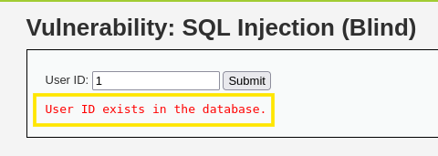
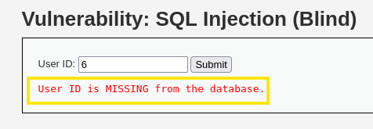
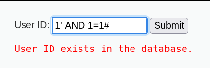
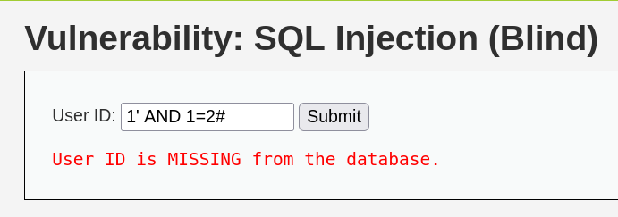
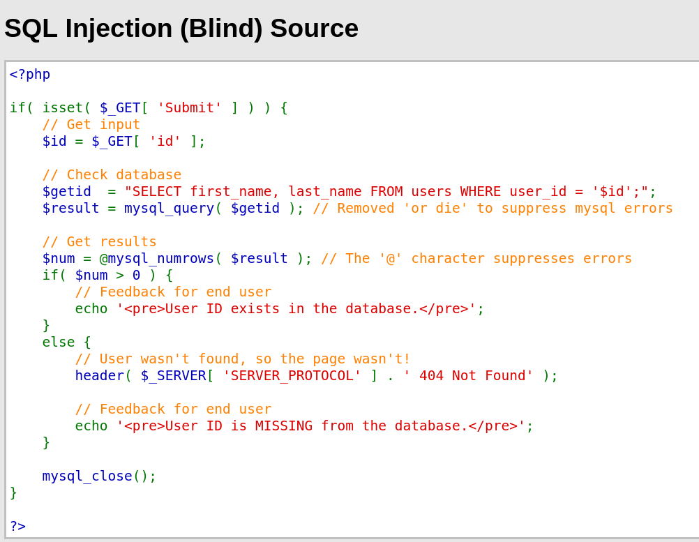
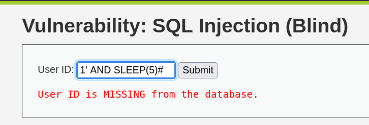
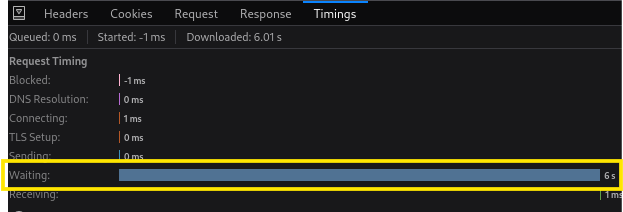
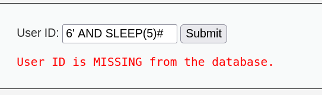

실습

1을 입력했더니 " User ID exists in the database." 문구가 뜬다 해석하면 당신의 ID는 데이터베이스에 존재한다 "라는 문구가 뜬다 즉, (에러가 발생하지 않도록 처리하는 루틴이 구현되어 있음을 추측할 수 있다)
여기서 재밌는 점은 1을 쳤을 때뿐 아니라 2, 3, 4, 5까지 쳤을 때도 동일한 문구가 뜬다는 건데 여기서 6 이상을 치면

"User ID is MISSING from the database." 당신의 ID가 없다는 문구가 뜬다
즉, (DB에 존재하는 정상적인 ID값을 입력하면 사용자 ID가 존재한다는 메시지가 출력되고, 데이터베이스가 없거나 비정상적인 값이 입력되면 사용자 ID가 없다는 메시지를 출력되는 것을 알 수 있다.)
이것으로 (1~5)까지의 ID는 존재한다는 걸로 알 수 있다.
BUT!
사용자의 정보 존재 유무만 알려주기 때문에 쉽게 정보를 빼내기는 어려움
1' AND 1=1#
1=1이라는 항상 참이 되는 조건을 추가함, 만약 폼의 입력값을 처리할 때 SQL 쿼리문을 실행된다면 AND 조건이 같이 처리되어 참이 될 수 있는 문구를 입력해 본 것입니다.
만약 SQL쿼리문이 실행되지 않는다면, ID가 1이 아니라 1'AND 1=1#의 전체 문자열을 하나로 ID로 처리하고 비정상적인 값으로 판단하여 사용자가 없다는 메시지가 나와야 함
1' AND 1=1#을 넣었더니 ID값이 존재한다는 문구가 뜸

- 이것으로 Blind 인젝션을 의심해 볼 수 있지만 확실하게 하기 위해서 하나 더 테스트를 함
1' AND 1=2#를 넣어보면

사용자가 없다고 표시됨 그 이유는 1=2는 거짓인 값이 되기 때문
즉, AND 이후의 조건이 바뀐다는 뜻이고 SQL쿼리문을 통해 처리되고 있다는 것

"SELECT first_name, last_name FROM users WHERE user_id = '$id';";
위 코드에서
WHERE user_id = '1' AND 1=1# 으로 1=1은 참이니까 사용자 ID가 존재한다는 문구가 뜨는 것이고 AND 1=2#을 할 경우 1=2는 거짓이니까 존재하지 않는다 라는 문구가 뜨게 되는 원리이다.
이러한 것들은 SQL 쿼리문이 뒤에서 사용된다는 것을 알려주는 힌트가 될 수 있음
Tip
- AND 연산을 이용해 입력값을 보낼 때 연산에 따라 결과가 달라진다면 Blind SQL 인젝션을 의심해 볼 수 있다.
이 취약점으로 뭘 할 수 있는가?
1. 어떤 사용자가 웹사이트에 정보가 존재하는가 참/거짓으로 유무 파악 가능
Sleep() 함수를 같이 쓸 수 있다 이 함수를 쓰면 페이지가 출력되는 시간을 늦출 수 있다 (단 SQL Blind가 실행될 경우만)
1' AND SLEEP(5)#

5초 후에 페이지를 반환해 준다.
개발자도구 - Network탭에서 시간을 확인할 수 있다.

위사진은 SLEEP(6)# 으로 한 것이다 그래서 Wating 시간이 6초로 찍혀있는 걸 확인할 수 있다.
Tip
- 개발자도구도 웹 모의해킹 시 유용하게 사용 가능하다,
처음에 6은 존재하지 않는 ID라고 했다 그러면 SLEEP() 함수가 통할까?

실행이 안 되는 것을 확인할 수 있었다.
이로써 참일 때는 SLEEP 함수가 되지만 거짓을 때는 실행이 안된다는 것을 알 수 있음
다만 쿼리문을 직접 짜기엔 시간이 많이 걸려서 자동화 튤을 자주 씀